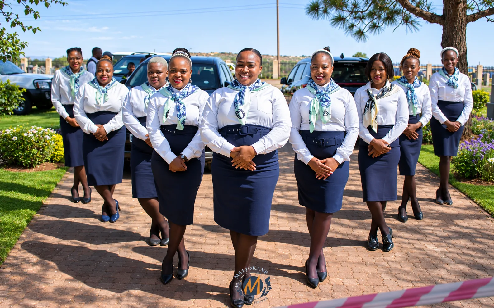
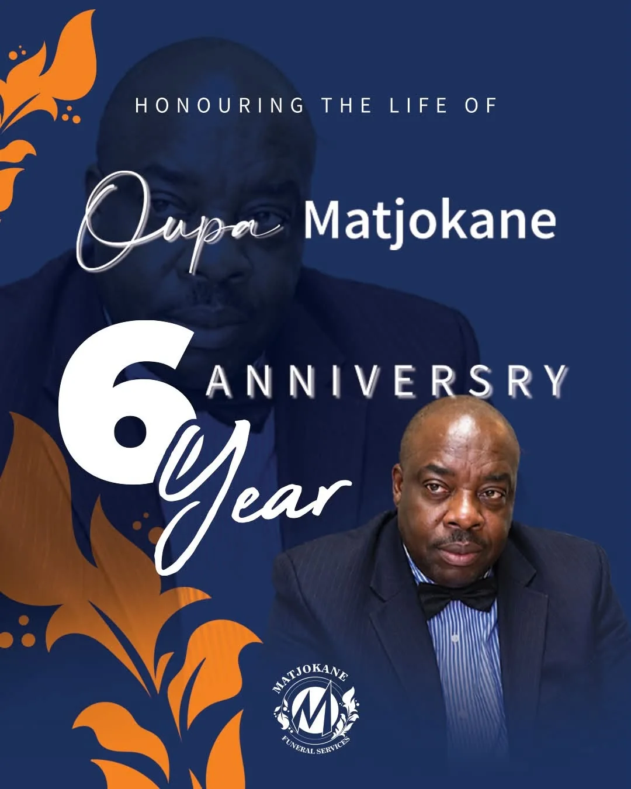

A name. A memory.
A lasting legacy.
Rooted in community. Expressed through care.

Service with dignity.
Care with purpose.
Founded in 2008, Matjokane Funeral Services is a proudly 100% Black-owned funeral home in Nellmapius, Pretoria. Our roots are in the community we serve, and our purpose is to stand beside families with warmth, respect and dignity when they need us most.
Our mission is to grow as an efficient, dependable and Black-empowered funeral home, bringing thoughtful care to every arrangement. From the first conversation to the final farewell, we aim to ease the practical burden so families have space to remember and honour a life.
Every family has its own story. Talk to us about the tribute you would like to create.
Speak with our team

Honouring the life of
Oupa Matjokane.
Oupa Matjokane was a beloved founder, father and brother whose vision and leadership gave life to Matjokane Funeral Services. The foundation he built continues to guide the work, values and spirit of the Matjokane family.
We remember him with gratitude for all he gave, and with love for the place he holds in the hearts of those who knew him. His legacy lives on in the care offered to families and in the pride with which his name is carried forward.
Remembered with love.
Honoured with dignity.
Care, considered
down to the detail.
Most Stylish Funeral Award
EWN reported Matjokane’s award at the National Funeral Business Awards. The feature highlighted considered graveside experiences, including seating, refreshments and music.
Read the feature on EWNLet us take care
of the arrangements.
A conversation is all it takes to begin. We’re here to listen.
Talk to our team